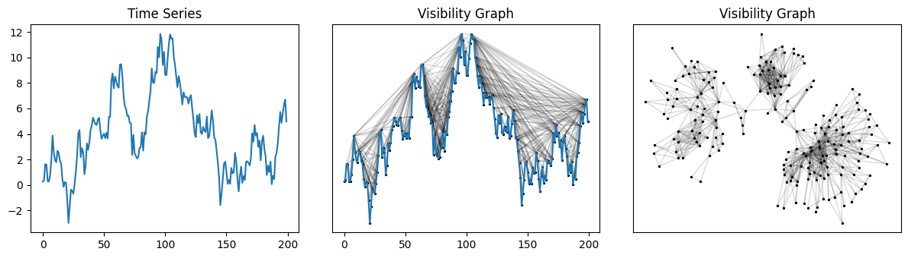
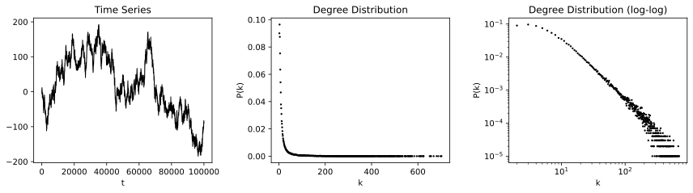
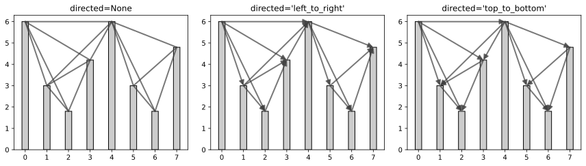
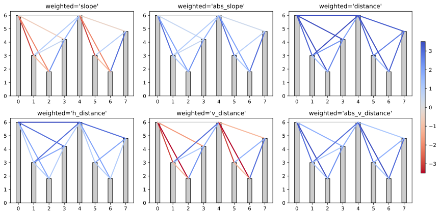
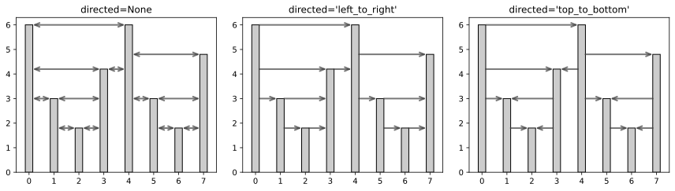
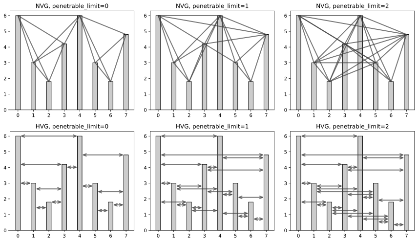
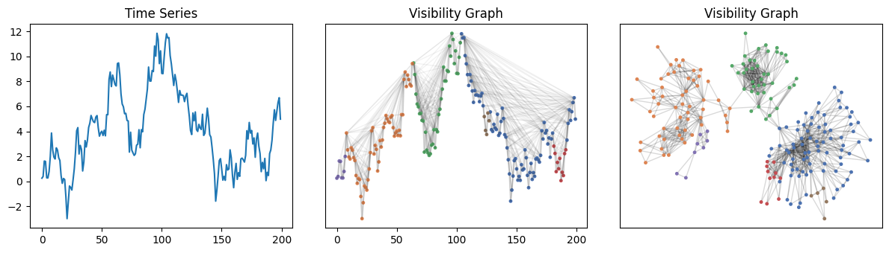

Examples#
Computing and drawing visibility graphs#
This example builds the visibility graph for a randomly generated motion time series and draws the graph with the help of NetworkX.
from ts2vg import NaturalVG
import networkx as nx
import numpy as np
import matplotlib.pyplot as plt
# 1. Generate random time series (Brownian motion)
rng = np.random.default_rng(110)
ts = rng.standard_normal(size=200)
ts = np.cumsum(ts)
# 2. Build visibility graph
g = NaturalVG(directed=None).build(ts)
nxg = g.as_networkx()
# 3. Make plots
fig, [ax0, ax1, ax2] = plt.subplots(ncols=3, figsize=(12, 3.5))
ax0.plot(ts)
ax0.set_title("Time Series")
graph_plot_options = {
"with_labels": False,
"node_size": 2,
"node_color": [(0, 0, 0, 1)],
"edge_color": [(0, 0, 0, 0.15)],
}
nx.draw_networkx(nxg, ax=ax1, pos=g.node_positions(), **graph_plot_options)
ax1.tick_params(bottom=True, labelbottom=True)
ax1.plot(ts)
ax1.set_title("Visibility Graph")
nx.draw_networkx(nxg, ax=ax2, pos=nx.kamada_kawai_layout(nxg), **graph_plot_options)
ax2.set_title("Visibility Graph")


Obtaining the adjacency matrix#
This example shows how to obtain the adjacency matrix for the visibility graph of a time series.
See adjacency_matrix() for more options.
from ts2vg import NaturalVG
ts = [6.0, 3.0, 1.8, 4.2, 6.0, 3.0, 1.8, 4.8]
g = NaturalVG().build(ts)
g.adjacency_matrix(triangle="lower")
array([[0, 0, 0, 0, 0, 0, 0, 0],
[1, 0, 0, 0, 0, 0, 0, 0],
[1, 1, 0, 0, 0, 0, 0, 0],
[1, 1, 1, 0, 0, 0, 0, 0],
[1, 1, 0, 1, 0, 0, 0, 0],
[0, 0, 0, 0, 1, 0, 0, 0],
[0, 0, 0, 0, 1, 1, 0, 0],
[0, 0, 0, 0, 1, 1, 1, 0]], dtype=uint8)
Obtaining the degree distribution#
This example shows how to get the degree distribution for the visibility graph of a given time series.
Here, we generate a random time series with 100.000 data points and then compute and plot its degree distribution.
from ts2vg import NaturalVG
import numpy as np
import matplotlib.pyplot as plt
# 1. Generate random time series (Brownian motion)
rng = np.random.default_rng(0)
ts = rng.standard_normal(size=100_000)
ts = np.cumsum(ts)
# 2. Build visibility graph
g = NaturalVG().build(ts, only_degrees=True)
# 3. Get degree distribution
ks, ps = g.degree_distribution
# 4. Make plots
fig, [ax0, ax1, ax2] = plt.subplots(ncols=3, figsize=(12, 3.5))
ax0.plot(ts, c="#000", linewidth=1)
ax0.set_title("Time Series")
ax0.set_xlabel("t")
ax1.scatter(ks, ps, s=2, c="#000", alpha=1)
ax1.set_title("Degree Distribution")
ax1.set_xlabel("k")
ax1.set_ylabel("P(k)")
ax2.scatter(ks, ps, s=2, c="#000", alpha=1)
ax2.set_yscale("log")
ax2.set_xscale("log")
ax2.set_title("Degree Distribution (log-log)")
ax2.set_xlabel("k")
ax2.set_ylabel("P(k)")


Building directed graphs#
This example illustrates different options for the directed parameter when building visibility graphs.
from ts2vg import NaturalVG
import matplotlib.pyplot as plt
ts = [6.0, 3.0, 1.8, 4.2, 6.0, 3.0, 1.8, 4.8]
direction_options = [
None,
"left_to_right",
"top_to_bottom",
]
fig, axs = plt.subplots(ncols=3, figsize=(12, 3.5))
for d, ax in zip(direction_options, axs):
ax.set_title(f"directed={repr(d)}")
nvg = NaturalVG(directed=d).build(ts)
plot_nvg(nvg, ax=ax)


Code for plot_nvg()
from matplotlib.patches import ArrowStyle, FancyArrowPatch def plot_nvg( vg, ax, edge_color=(0.25, 0.25, 0.25, 0.7), ): bars = ax.bar(vg.xs, vg.ts, color="#ccc", edgecolor="#000", width=0.3) ax.set_xticks(vg.xs) for (n1, n2) in vg.edges: x1, y1 = vg.xs[n1], vg.ts[n1] x2, y2 = vg.xs[n2], vg.ts[n2] arrow = FancyArrowPatch( (x1, y1), (x2, y2), arrowstyle=ArrowStyle("->", head_length=6, head_width=2.5) if vg.is_directed else ArrowStyle("-"), shrinkA=0, shrinkB=0, color=edge_color, linewidth=2, ) ax.add_patch(arrow)
Building weighted graphs#
This example illustrates different options for the weighted parameter when building visibility graphs.
See Weighted graphs for a complete list of available values for weighted.
from ts2vg import NaturalVG
import matplotlib.pyplot as plt
ts = [6.0, 3.0, 1.8, 4.2, 6.0, 3.0, 1.8, 4.8]
weight_options = [
"slope",
"abs_slope",
"distance",
"h_distance",
"v_distance",
"abs_v_distance",
]
fig, axs = plt.subplots(ncols=3, nrows=2, figsize=(12, 6))
cbar_ax = fig.add_axes([0.96, 0.2, 0.01, 0.6])
for w, ax in zip(weight_options, axs.flat):
ax.set_title(f"weighted='{w}'")
nvg = NaturalVG(weighted=w).build(ts)
plot_weighted_nvg(nvg, ax=ax, cbar_ax=cbar_ax)


Code for plot_weighted_nvg()
from matplotlib.cm import ScalarMappable from matplotlib.colors import Normalize from matplotlib.patches import ArrowStyle, FancyArrowPatch def plot_weighted_nvg( vg, ax, cbar_ax, weights_cmap="coolwarm_r", weights_range=(-3.5, 3.5), ): bars = ax.bar(vg.xs, vg.ts, color="#ccc", edgecolor="#000", width=0.3) ax.set_xticks(vg.xs) color_mappable = ScalarMappable(norm=Normalize(*weights_range), cmap=weights_cmap) cbar_ax.get_figure().colorbar(color_mappable, cax=cbar_ax, orientation="vertical", aspect=30, pad=0.05) for (n1, n2, w) in vg.edges: x1, y1 = vg.xs[n1], vg.ts[n1] x2, y2 = vg.xs[n2], vg.ts[n2] arrow = FancyArrowPatch( (x1, y1), (x2, y2), arrowstyle=ArrowStyle("-"), shrinkA=0, shrinkB=0, color=color_mappable.to_rgba(w, alpha=1), linewidth=2, ) ax.add_patch(arrow)
Building horizontal visibility graphs#
This example illustrates different options for horizontal visibility graphs. Note that horizontal visibility graphs can also be directed and/or weighted.
from ts2vg import HorizontalVG
import matplotlib.pyplot as plt
ts = [6.0, 3.0, 1.8, 4.2, 6.0, 3.0, 1.8, 4.8]
direction_options = [
None,
"left_to_right",
"top_to_bottom",
]
fig, axs = plt.subplots(ncols=3, figsize=(12, 3.5))
for d, ax in zip(direction_options, axs):
ax.set_title(f"directed={repr(d)}")
hvg = HorizontalVG(directed=d).build(ts)
plot_hvg(hvg, ax=ax)


Code for plot_utils()
from matplotlib.patches import ArrowStyle, FancyArrowPatch def plot_hvg( vg, ax, edge_color=(0.25, 0.25, 0.25, 0.7), bar_width=0.3, prevent_overlap=False, ): occupied_heights = set() bars = ax.bar(vg.xs, vg.ts, color="#ccc", edgecolor="#000", width=bar_width) ax.set_xticks(vg.xs) for i, (n1, n2) in enumerate(vg.edges): y = min(vg.ts[n1], vg.ts[n2]) if prevent_overlap: # very naive overlap prevention while round(y, 2) in occupied_heights: y -= 0.18 occupied_heights.add(round(y, 2)) if n1 < n2: x1, y1 = vg.xs[n1] + (bar_width / 2), y x2, y2 = vg.xs[n2] - (bar_width / 2), y else: x1, y1 = vg.xs[n1] - (bar_width / 2), y x2, y2 = vg.xs[n2] + (bar_width / 2), y arrow = FancyArrowPatch( (x1, y1), (x2, y2), arrowstyle=( ArrowStyle("->", head_length=6, head_width=2.5) if vg.is_directed else ArrowStyle("<->", head_length=6, head_width=2.5) ), shrinkA=0, shrinkB=0, color=edge_color, linewidth=2, ) ax.add_patch(arrow)
Building limited penetrable visibility graphs#
Limited penetrable visibility graphs (LPVG) are a variation of visibility graphs in which nodes are allowed to have a certain number of obstructions between them and still have a connecting edge in the resulting graph. Limited penetrable visibility graphs might be more robust to noise in the data.
The maximum number of data points that are allowed to obstruct two nodes is given by the
penetrable_limit parameter.
Note that when penetrable_limit is 0, the behavior is exactly the same as a regular (non-penetrable) visibility graph.
from ts2vg import NaturalVG, HorizontalVG
import matplotlib.pyplot as plt
ts = [6.0, 3.0, 1.8, 4.2, 6.0, 3.0, 1.8, 4.8]
penetrable_limit_options = [
0,
1,
2,
]
fig, axs = plt.subplots(ncols=3, nrows=2, figsize=(12, 7))
# plot limited penetrable visibility graphs
for penetrable_limit, ax in zip(penetrable_limit_options, axs.flat[:3]):
ax.set_title(f"NVG, penetrable_limit={penetrable_limit}")
nvg = NaturalVG(penetrable_limit=penetrable_limit).build(ts)
plot_nvg(nvg, ax=ax)
# plot limited penetrable horizontal visibility graphs
for penetrable_limit, ax in zip(penetrable_limit_options, axs.flat[3:]):
ax.set_title(f"HVG, penetrable_limit={penetrable_limit}")
hvg = HorizontalVG(penetrable_limit=penetrable_limit).build(ts)
plot_hvg(hvg, ax=ax, prevent_overlap=True)


Code for plot_nvg(), plot_hvg()
from matplotlib.patches import ArrowStyle, FancyArrowPatch def plot_nvg( vg, ax, edge_color=(0.25, 0.25, 0.25, 0.7), ): bars = ax.bar(vg.xs, vg.ts, color="#ccc", edgecolor="#000", width=0.3) ax.set_xticks(vg.xs) for (n1, n2) in vg.edges: x1, y1 = vg.xs[n1], vg.ts[n1] x2, y2 = vg.xs[n2], vg.ts[n2] arrow = FancyArrowPatch( (x1, y1), (x2, y2), arrowstyle=ArrowStyle("->", head_length=6, head_width=2.5) if vg.is_directed else ArrowStyle("-"), shrinkA=0, shrinkB=0, color=edge_color, linewidth=2, ) ax.add_patch(arrow)from matplotlib.patches import ArrowStyle, FancyArrowPatch def plot_hvg( vg, ax, edge_color=(0.25, 0.25, 0.25, 0.7), bar_width=0.3, prevent_overlap=False, ): occupied_heights = set() bars = ax.bar(vg.xs, vg.ts, color="#ccc", edgecolor="#000", width=bar_width) ax.set_xticks(vg.xs) for i, (n1, n2) in enumerate(vg.edges): y = min(vg.ts[n1], vg.ts[n2]) if prevent_overlap: # very naive overlap prevention while round(y, 2) in occupied_heights: y -= 0.18 occupied_heights.add(round(y, 2)) if n1 < n2: x1, y1 = vg.xs[n1] + (bar_width / 2), y x2, y2 = vg.xs[n2] - (bar_width / 2), y else: x1, y1 = vg.xs[n1] - (bar_width / 2), y x2, y2 = vg.xs[n2] + (bar_width / 2), y arrow = FancyArrowPatch( (x1, y1), (x2, y2), arrowstyle=( ArrowStyle("->", head_length=6, head_width=2.5) if vg.is_directed else ArrowStyle("<->", head_length=6, head_width=2.5) ), shrinkA=0, shrinkB=0, color=edge_color, linewidth=2, ) ax.add_patch(arrow)
Partitioning time series via community detection#
Time series can be partitioned by applying community detection algorithms to their visibility graphs.
from ts2vg import NaturalVG
import networkx as nx
import numpy as np
import matplotlib.pyplot as plt
# 1. Generate Brownian motion series
rng = np.random.default_rng(110)
ts = rng.standard_normal(size=200)
ts = np.cumsum(ts)
# 2. Build visibility graph
g = NaturalVG(directed=None).build(ts)
nxg = g.as_networkx()
# 3. Partition the graph into communities
communities = nx.algorithms.community.greedy_modularity_communities(nxg)
# 4. Make plots
COLORS = [
"#4C72B0", "#DD8452", "#55A868", "#C44E52", "#8172B3",
"#937860", "#DA8BC3", "#8C8C8C", "#CCB974", "#64B5CD",
]
node_colors = ["#000000"] * len(ts)
for community_id, community_nodes in enumerate(communities):
for node in community_nodes:
node_colors[node] = COLORS[community_id % len(COLORS)]
fig, [ax0, ax1, ax2] = plt.subplots(ncols=3, figsize=(12, 3.5))
ax0.plot(ts)
ax0.set_title("Time Series")
graph_plot_options = {
"with_labels": False,
"node_size": 6,
"node_color": [node_colors[n] for n in nxg.nodes],
}
nx.draw_networkx(nxg, ax=ax1, pos=g.node_positions(), edge_color=[(0, 0, 0, 0.05)], **graph_plot_options)
ax1.tick_params(bottom=True, labelbottom=True)
ax1.plot(ts, c=(0, 0, 0, 0.15))
ax1.set_title("Visibility Graph")
nx.draw_networkx(nxg, ax=ax2, pos=nx.kamada_kawai_layout(nxg), edge_color=[(0, 0, 0, 0.15)], **graph_plot_options)
ax2.set_title("Visibility Graph")

